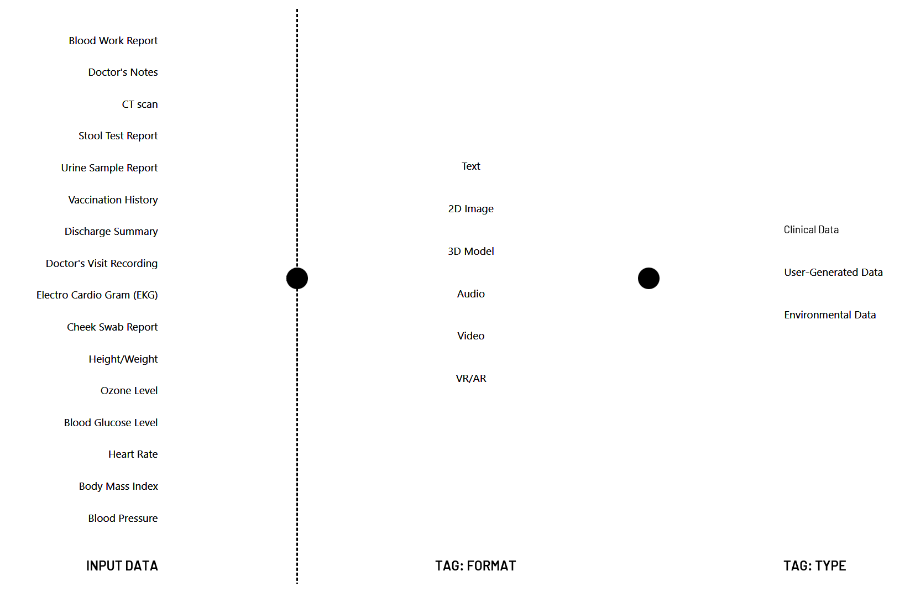

How does OMNI INDI work?
One simple portal supported by a robust data architecture and security.
Data Architecture
To ensure data security, individual health documents are anonymously stored as unstructured data on OMNI INDI servers (a cloud based storage). Only the ledger referencing each piece of data to an individual's identity is secured on the blockchain (cryptographic encryption) to reduce the system's dependency on the blockchain model. Only the user/owner of the data can connect the dots between the data and the user's identity through a biometric identification, utilizing fingerprint or facial recognition.
Data Parsing
Below is an interactive diagram showing how a type of data generated (either clinically or at home) is aggregated, parsed, and stored for for ease of retrieval. Incoming data may range from CT scans, urine sample report, sleep data, to air quality. Those then are parsed based on data formats and later stored within the three main buckets: "clinical", "personal tracking", and "environmental"
How about the Data Marketplace?
As part of the proof-of-concept, we've developed a multi-agent simulation to demonstrate the potential benefit of OMNI INDI. To keep the simulation fairly simple (at this stage),
we've only captured three of the main stakeholders: users, healthcare facilities, and researchers.
The simulation below was run across 5 stakeholder groups: users, researchers, healthcare facilities, data miners, and insurers.
The diagrams below show how the stakeholders interact with each other in both the current healthcare system and in the new OMNI INDI model. Whereas in the
current model, the data miners benefit from selling health data from the hospitals, in the OMNI INDI model, the users take control on who and how much to sell.
Existing System
OMNI INDI

Simulation Assumptions
Users:
1000 users were put into the simulation. 10% of the users were assumed to have rare disease, 33% to have a chronic illness, and the rest to have no significant health issues.
Each user condition has a different probability of visiting the healthcare facilities.
Healthcare Providers:
The healthcare providers are divided into three types (small, medium, large). Each facility is assumed to have a percentage of administrative
burden added to the cost for each procedure.
Researchers:
Ten researchers were randomly split into three research fields (each dealing with typical, chronic, and rare condition treatments).
Each researcher has data targets for each data type depending upon their research field, therefore shifting demand for each data type.
Insurers:
The insurers affect the pricing for each user's procedure costs depending upon frequency of doctor's visits.
Simulation Results
The current model shows the difference from the existing system to the OMNI INDI model for each of the stakeholders. Users, healthcare providers, and researchers all benefit from the OMNI INDI model, whereas the data miners lose out on their business. The diagram below shows both the average and expanded outcomes of the users and healthcare providers (across each subgroups).
Learn more about the simulation (OMNI INDI simulator).In the News
HBR: Making Better Use of Health Care Data